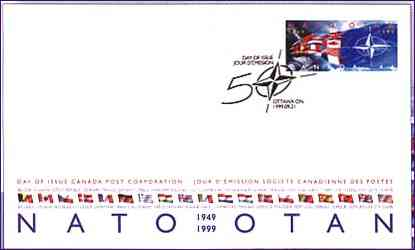
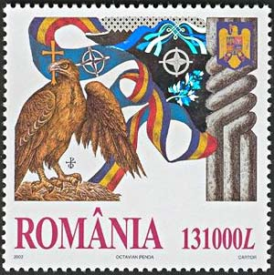
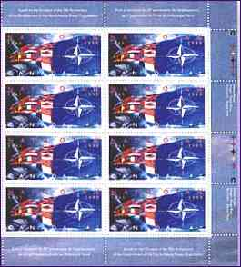
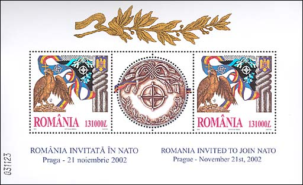
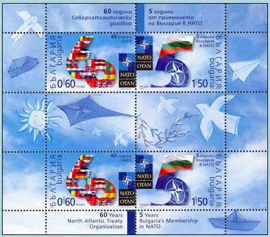

NATO - The Right Answer
North Atlantic Treaty Organization (NATO), regional defence alliance, formed under Article 9 of the North Atlantic Treaty signed on April 4, 1949. The original signatories were Belgium, Britain, Canada, Denmark, France, Iceland, Italy, Luxembourg, the Netherlands, Norway, Portugal, and the United States. Greece and Turkey were admitted to the alliance in 1952, West Germany in 1955, and Spain in 1982. NATO's purpose is to enhance the stability, well-being, and freedom of its members by means of a system of collective security. In 1990 the newly unified Germany replaced West Germany as a NATO member.

In the years after World War II (1939-1945), many Western leaders saw the policies of the Union of Soviet Socialist Republics (USSR) as threatening the stability and peace in Europe. The forcible installation of Communist governments throughout Eastern Europe, territorial demands by the USSR (the former Soviet Union), and their support of guerrilla war in Greece and regional separatism in Iran appeared to many as the first steps of World War III. Such events prompted the signing of the Dunkirk Treaty in 1947 between Britain and France, pledging common defence against aggression. Subsequent events, including the rejection by Eastern European nations of the European Recovery Program (Marshall Plan) and the creation of Cominform, a European Communist organization in 1947, led to the Brussels Treaty signed by most Western European countries in 1948. Among the goals of that pact was the collective defense of its members.


The Berlin blockade by the USSR, that began in March 1948, led to negotiations between Western Europe, Canada, and the United States that resulted in the North Atlantic Treaty. (After Microsoft Encarta 1996).

Featured above are:
- The FDC and the right half of the sheet dedicated by the Canadian Post to the 50th anniversary of the NATO
- The stamp issued by the Romanian PA, 22nd of November 2002 (first Romanian hologram), "Romania invited to join NATO" .
- The full Romanian sheet with two stamps

It is the place here to remember the fate of Romania's southern neighbor. Even if Bulgaria never declared war to USSR, and maintained diplomatic relations with this country, USSR declared war to Bulgaria on 5 september 1944 and invaded the country. The promised free election of 1946 were blatantly rigged, which marked the final establishment of a Communist regime in Bulgaria. It ended, like many others in this part of the world, only in 1989.
The above miniature sheet, issued 20 years after, in 2009, commemorates NATO's 60th Anniversary and 5th anniversary of Bulgaria's membership in NATO.
Revised:
04/27/2012
.
|
Please click the banner to visit the site |